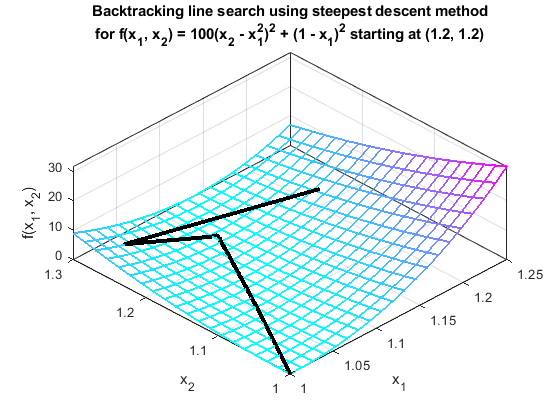
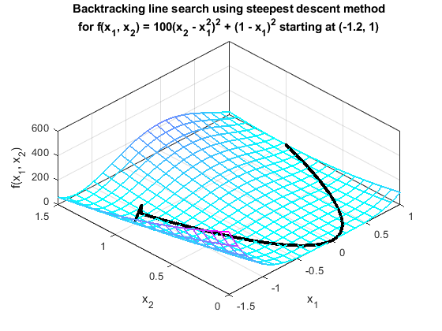
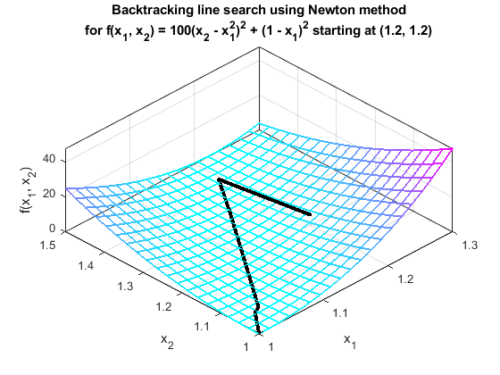
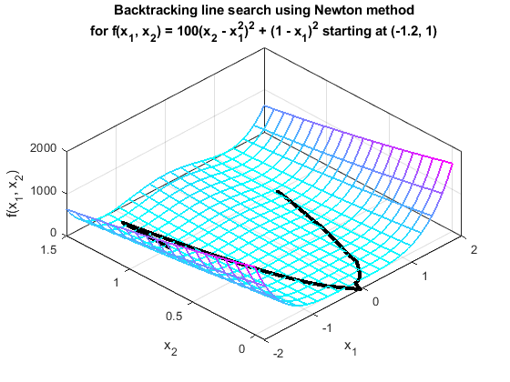

Contents
Homework Introduction
Establishing Parameters
clear
clc
alpha = 1.0;
c1 = 1e-4;
tolerance = 1e-8;
param = [alpha, c1, tolerance];
p1 = [ 1.2; 1.2];
p2 = [-1.2; 1.0];
Setting Up Functions
x = sym('x', [2,1]);
f(x) = 100*(x(2) - x(1)^2)^2 + (1 - x(1))^2;
NE = "Newton";
SD = "steepest descent";
Iterating Methods and Printing Results:
SD_point1 = line_search2(SD, f, p1, param);
figure(1)
plot_search(SD_point1, SD, f, [1 1.25 1 1.3]);
SD_point2 = line_search2(SD, f, p2, param);
figure(2)
plot_search(SD_point2, SD, f, [-1.5 1 0 1.5]);
newton_point1 = line_search2(NE, f, p1, param);
figure(3)
plot_search(newton_point1, NE, f, [1 1.3 1 1.5]);
newton_point2 = line_search2(NE, f, p2, param);
figure(4)
plot_search(newton_point2, NE, f, [-2 2 0 1.5]);
6627 iterations using steepest descent method,
starting at point (1.2, 1.2):
Columns 1 through 3
'x_1' 'x_2' 'f(x_0)'
[1.200000000000000] [1.200000000000000] [ 5.800000000000000]
[1.033436323075138] [1.269161388342503] [ 4.048085233966373]
[1.103817575930140] [1.235081932118467] [ 0.038562615658022]
[1.107371729613175] [1.233425256012042] [ 0.016645384392140]
[1.109860336251211] [1.232219908597111] [ 0.012087778546316]
[1.107623575099180] [1.225553196413348] [ 0.011745852600763]
[1.106885755170250] [1.225794458183938] [ 0.011460370901938]
[1.106965519810849] [1.225607886835325] [ 0.011447155498363]
[1.106762273471622] [1.225520785373598] [ 0.011433950062202]
[1.106842189895229] [1.225334224994542] [ 0.011420756866418]
'...' '...' '...'
[1.000099936023075] [1.000200407399983] [1.001480971702811e-08]
Columns 4 through 6
'p_k1' 'p_k2' 'alpha'
[-0.923548958248274] [ 0.383480536296861] [ 0.180351756598577]
[ 0.900038827676451] [-0.435809716131708] [ 0.078198018452936]
[ 0.906371557532932] [-0.422481478523410] [ 0.003921298780281]
[ 0.899991457637111] [-0.435907531685596] [ 0.002765144732117]
[-0.318086018041949] [-0.948061857225686] [ 0.007031937982688]
[-0.950475762919470] [ 0.310798687421055] [7.762638014714978e-04]
[ 0.393109285121972] [-0.919491756325684] [2.029070378601373e-04]
[-0.919151763260955] [-0.393903587308211] [2.211238093105806e-04]
[ 0.393761011673693] [-0.919212851131722] [2.029566697490118e-04]
[-0.919593860001149] [-0.392870376394285] [2.211390105159159e-04]
'...' '...' '...'
[ 0.097517931168010] [-0.995233768066936] [3.745572530042390e-07]
6881 iterations using steepest descent method,
starting at point (-1.2, 1):
Columns 1 through 3
'x_1' 'x_2' 'f(x_0)'
[-1.200000000000000] [ 1] [ 24.199999999999996]
[-0.916318512018655] [1.115788362441365] [ 11.298089684996789]
[-0.994944861015709] [1.071196455859775] [ 4.640468010929330]
[-1.018893827010255] [1.057467810530828] [ 4.113270812541807]
[-1.022771347118127] [1.053562891613034] [ 4.097231417689490]
[-1.013638267104267] [1.039531165204547] [ 4.069304250535435]
[-1.015274596282474] [1.034970437105471] [ 4.063085575236064]
[-1.010551734631548] [1.033272513476861] [ 4.056857102881972]
[-1.012171391369010] [1.028692839466808] [ 4.050599316337403]
[-1.007441725683817] [1.026981894809291] [ 4.044325821453820]
'...' '...' '...'
[ 0.999900320108144] [0.999799848708090] [1.000031213358606e-08]
Columns 4 through 6
'p_k1' 'p_k2' 'alpha'
[ 0.925847643695199] [ 0.377896997426612] [ 0.306401911711012]
[-0.869846671295194] [-0.493322175091158] [ 0.090391044297473]
[-0.867563176792082] [-0.497326989288166] [ 0.027604866867564]
[-0.704612978454513] [-0.709591819705851] [ 0.005503049512906]
[ 0.545511335573054] [-0.838103443950270] [ 0.016742236903776]
[-0.337708386619763] [-0.941250787838542] [ 0.004845391003124]
[ 0.941033792204609] [-0.338312580210983] [ 0.005018801333225]
[-0.333424361446613] [-0.942776853340131] [ 0.004857643665972]
[ 0.940362582962182] [-0.340173797586900] [ 0.005029619181884]
[-0.328664843798693] [-0.944446621281891] [ 0.004872163096365]
'...' '...' '...'
[-0.603082816355400] [ 0.797678579765584] [2.437680288699989e-07]
6 iterations using Newton method,
starting at point (1.2, 1.2):
Columns 1 through 3
'x_1' 'x_2' 'f(x_0)'
[1.200000000000000] [1.200000000000000] [ 5.800000000000000]
[1.195918367346939] [1.430204081632653] [ 0.038384034418534]
[1.155211833944910] [1.332844172672881] [ 0.024369673077798]
[1.038864772751658] [1.065703377416048] [ 0.019834529150520]
[1.028381541813993] [1.057458697412834] [8.067196756568187e-04]
[1.000610399330343] [1.000449934893181] [5.985313884626810e-05]
'...' '...' '...'
[1.000610399330343] [1.000449934893181] [5.985313884626810e-05]
Columns 4 through 6
'p_k1' 'p_k2' 'alpha'
[ -0.004081632653061] [ 0.230204081632653] [ 1]
[ -0.195267745952617] [ -0.467031908145227] [0.208465218889279]
[ -0.116347061193252] [ -0.267140795256833] [ 1]
[ -0.010483230937665] [ -0.008244680003214] [ 1]
[ -0.027771142483650] [ -0.057008762519653] [ 1]
[-5.288289136091240e-04] [-2.870670660005789e-04] [ 1]
'...' '...' '...'
[-5.288289136091240e-04] [-2.870670660005789e-04] [ 1]
74 iterations using Newton method,
starting at point (-1.2, 1):
Columns 1 through 3
'x_1' 'x_2' 'f(x_0)'
[-1.200000000000000] [ 1] [ 24.199999999999996]
[-1.175280898876405] [1.380674157303371] [ 4.731884325266608]
[-1.169506856532501] [1.367103734083076] [ 4.706801288027877]
[-1.163652474014490] [1.353412209840210] [ 4.681437573320078]
[-1.157715081337509] [1.339596188397116] [ 4.655784501627521]
[-1.151691866413390] [1.325652111181518] [ 4.629832950916547]
[-1.145579864546080] [1.311576246141735] [ 4.603573324923889]
[-1.139375946925083] [1.297364675670632] [ 4.576995518494118]
[-1.133076807999017] [1.283013283427893] [ 4.550088879626142]
[-1.126678951594787] [1.268517739935414] [ 4.522842167841702]
'...' '...' '...'
[ 0.999375560425685] [0.998718192552522] [5.009351845592296e-07]
Columns 4 through 6
'p_k1' 'p_k2' 'alpha'
[ 0.024719101123595] [ 0.380674157303371] [ 1]
[ 1.938395770052881] [-4.555708012051582] [0.002978773702001]
[ 1.922451331208427] [-4.495997473003121] [0.003045269559220]
[ 1.906345261054518] [-4.435971888263945] [0.003114542154707]
[ 1.890072777551050] [-4.375623497633452] [0.003186763491681]
[ 1.873628862338257] [-4.314944198883448] [0.003262119830756]
[ 1.857008244228283] [-4.253925525856300] [0.003340813181783]
[ 1.840205381196065] [-4.192558624713001] [0.003423062985487]
[ 1.823214440697427] [-4.130834228128959] [0.003509108013527]
[ 1.806029278127930] [-4.068742627230016] [0.003599208520566]
'...' '...' '...'
[6.203060750052824e-04] [ 0.001273155686318] [ 1]
   